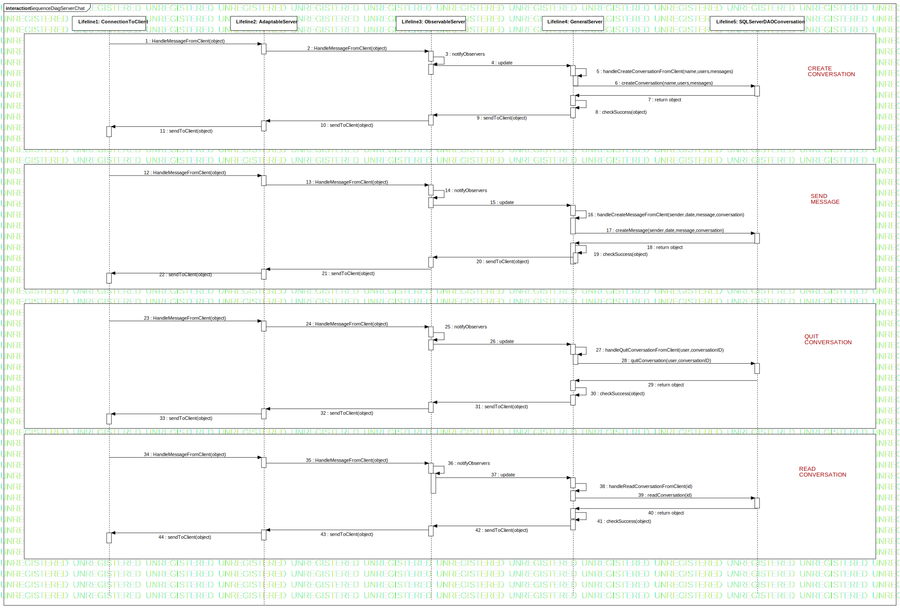

Interaction1
UMLInteraction
Learn Together
::
Model
::
SequenceServerChat
::
Interaction1
Description
none
Diagrams

SequenceDiagServerChat
Participants
Lifeline1: ConnectionToClient
Lifeline2: AdaptableServer
Lifeline3: ObservableServer
Lifeline4: GeneralServer
Lifeline5: SQLServerDAOConversation
Messages
HandleMessageFromClient (Lifeline1→Lifeline2)
HandleMessageFromClient (Lifeline2→Lifeline3)
notifyObservers (Lifeline3→Lifeline3)
update (Lifeline3→Lifeline4)
handleCreateConversationFromClient (Lifeline4→Lifeline4)
createConversation (Lifeline4→Lifeline5)
return object (Lifeline5→Lifeline4)
checkSuccess (Lifeline4→Lifeline4)
sendToClient (Lifeline4→Lifeline3)
sendToClient (Lifeline3→Lifeline2)
sendToClient (Lifeline2→Lifeline1)
HandleMessageFromClient (Lifeline1→Lifeline2)
HandleMessageFromClient (Lifeline2→Lifeline3)
notifyObservers (Lifeline3→Lifeline3)
update (Lifeline3→Lifeline4)
handleCreateMessageFromClient (Lifeline4→Lifeline4)
createMessage (Lifeline4→Lifeline5)
return object (Lifeline5→Lifeline4)
checkSuccess (Lifeline4→Lifeline4)
sendToClient (Lifeline4→Lifeline3)
sendToClient (Lifeline3→Lifeline2)
sendToClient (Lifeline2→Lifeline1)
HandleMessageFromClient (Lifeline1→Lifeline2)
HandleMessageFromClient (Lifeline2→Lifeline3)
notifyObservers (Lifeline3→Lifeline3)
update (Lifeline3→Lifeline4)
handleQuitConversationFromClient (Lifeline4→Lifeline4)
quitConversation (Lifeline4→Lifeline5)
return object (Lifeline5→Lifeline4)
checkSuccess (Lifeline4→Lifeline4)
sendToClient (Lifeline4→Lifeline3)
sendToClient (Lifeline3→Lifeline2)
sendToClient (Lifeline2→Lifeline1)
HandleMessageFromClient (Lifeline1→Lifeline2)
HandleMessageFromClient (Lifeline2→Lifeline3)
notifyObservers (Lifeline3→Lifeline3)
update (Lifeline3→Lifeline4)
handleReadConversationFromClient (Lifeline4→Lifeline4)
readConversation (Lifeline4→Lifeline5)
return object (Lifeline5→Lifeline4)
checkSuccess (Lifeline4→Lifeline4)
sendToClient (Lifeline4→Lifeline3)
sendToClient (Lifeline3→Lifeline2)
sendToClient (Lifeline2→Lifeline1)
Properties
Name
Value
name
Interaction1
stereotype
null
visibility
public
isReentrant
true
Owned Elements
SequenceDiagServerChat